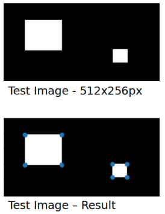

Harris corner detector on PyCUDA
A first intruduction to GPU programming
Visit the github repository for the full code. GitHub
The function devides the image in four different parts to process them on different streams.
These are the execution times for the different implementations:
- Python Code -> ≈2.22 seconds
- PyCUDA – single stream -> ≈0.0018 seconds
- PyCUDA – four streams (with concurrency) -> ≈0.0015 seconds
This is the image used to test the code:

Python code
from string import Template
import pycuda.driver as drv
import pycuda.tools
import pycuda.autoinit
from pycuda.compiler import SourceModule
import numpy as np
def pycuda_multi_kernel(img, k_harris, thresh, executions):
"""
Finds and returns list of corners
:param img: grayscale image
:param k: Harris corner constant. Usually 0.04 - 0.06
:param thresh: The threshold above which a corner is counted
:param executions: Number of times to be executed
:return: corner_list: List with corners
:return: average_execution_time: Average execution time in seconds
"""
# jumping some lines ...
# function template
func_mod_template = Template("""
#include<stdio.h>
#define INDEX(a, b) a*${HEIGHT}+b
__global__ void corners(
float *dest,
float *ixx,
float *ixy,
float *iyy,
int offset,
float k,
int threshold) {
unsigned int idx = threadIdx.x + threadIdx.y*blockDim.y +
(blockIdx.x*(blockDim.x*blockDim.y));
unsigned int a = idx/${HEIGHT};
unsigned int b = idx%${HEIGHT};
float sxx = 0;
float sxy = 0;
float syy = 0;
float det = 0;
float trace = 0;
float r = 0;
if ((a >= offset) & (a <= (${WIDTH}-offset - 1)) &
(b >= offset) & (b <= (${HEIGHT}-offset - 1))) {
for (int bi = b - offset; bi < b + offset + 1; ++bi) {
for (int ai = a - offset; ai < a + offset + 1; ++ai) {
sxx = sxx + ixx[INDEX(ai, bi)];
sxy = sxy + ixy[INDEX(ai, bi)];
syy = syy + iyy[INDEX(ai, bi)];
}
}
det = sxx*syy - sxy*sxy;
trace = sxx + syy;
r = det - k*(trace*trace);
if ((r/10) > threshold)
dest[INDEX(a, b)] = r;
}
}
""")
# jumping some lines ...
func_mod = SourceModule(func_mod_template.substitute(HEIGHT=k_height,
WIDTH=k_width))
pycuda_corners = func_mod.get_function("corners")